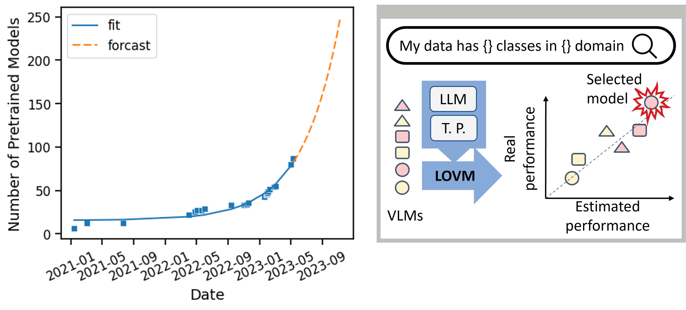
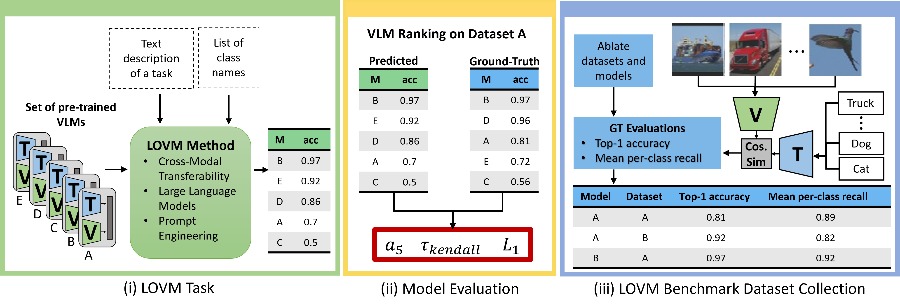
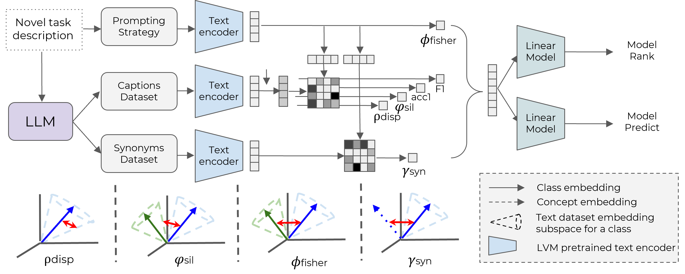
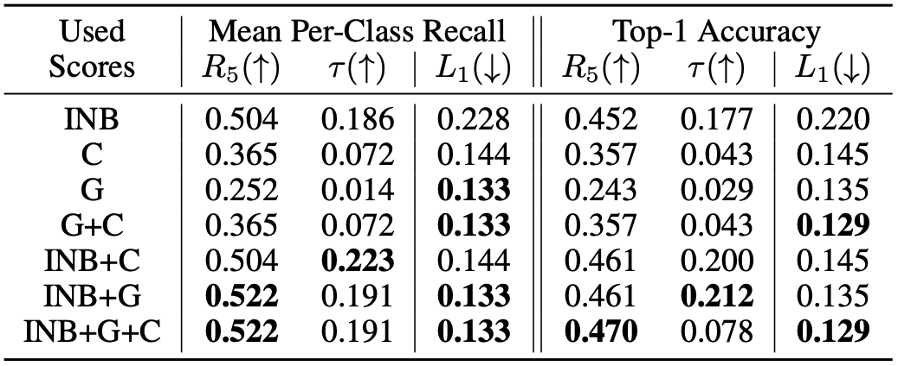

Pre-trained multi-modal vision-language models (VLMs) are becoming increasingly popular due to their exceptional performance on downstream vision applications, particularly in the few- and zero-shot settings. However, selecting the best-performing VLM for some downstream applications is non-trivial, as it is dataset and task-dependent. Meanwhile, the exhaustive evaluation of all available VLMs on a novel application is not only time and computationally demanding but also necessitates the collection of a labeled dataset for evaluation. As the number of open-source VLM variants increases, there is a need for an efficient model selection strategy that does not require access to a curated evaluation dataset. This paper proposes a novel task and benchmark for efficiently evaluating VLMs’ zero-shot performance on downstream applications without access to the downstream task dataset.
Specifically, we introduce a new task LOVM: Language-Only Vision Model Selection, where methods are expected to perform both model selection and performance prediction based solely on a text description of the desired downstream application. We then introduced an extensive LOVM benchmark consisting of ground-truth evaluations of 35 pre-trained VLMs and 23 datasets, where methods are expected to rank the pre-trained VLMs and predict their zero-shot performance.

The Language-Only Vision-Language Model (LOVM) selection task represents a novel approach to model selection in the field of pre-trained vision-language models (VLMs). It aims to efficiently select the most suitable VLM and predict its performance based solely on a text description of a downstream vision task, eliminating the need for access to the downstream task dataset. This is particularly useful for users who lack the resources or technical proficiency to collect and label an evaluation dataset and subsequently evaluate all available VLMs. LOVM methods leverage the phenomenon of cross-modality transferability, using text as a proxy for corresponding images. The ultimate goal of LOVM is to simplify and democratize the model selection process, allowing users with minimal technical expertise to deploy effective AI solutions for their specific vision tasks.


Our baselines (which we call modelGPT) uses a text description of a novel task and prompts a Large Language Model (LLM) - GPT3.5 to generate the Captions and Synonym Datasets. We then use every VLM’s text encoder to produce both the class weights (top) and the different text-based scores (left). On the bottom, you can see a graphical interpretation of each score. We then fit linear regression models on these scores to produce our baselines.
We evaluate our baselines’s performance over 23 datasets and 35 pre-trained models, and when predicting the top-1 accuracy and mean per-class recall (averaged over all datasets). INB - ImageNet Baseline, C - Text Classification scores, G - Granularity scores. As can be seen, mixed approaches achieve the best VLM ranking and performance prediction.

@inproceedings{zohar2023lovm,
title = {LOVM: Language-Only Vision Model Selection},
author = {Zohar, Orr and Huang, Shih-Cheng and Wang, Kuan-Chieh and Yeung, Serena},
year = {2023},
booktitle = {Thirty-seventh Conference on Neural Information Processing Systems Datasets and Benchmarks Track},
}